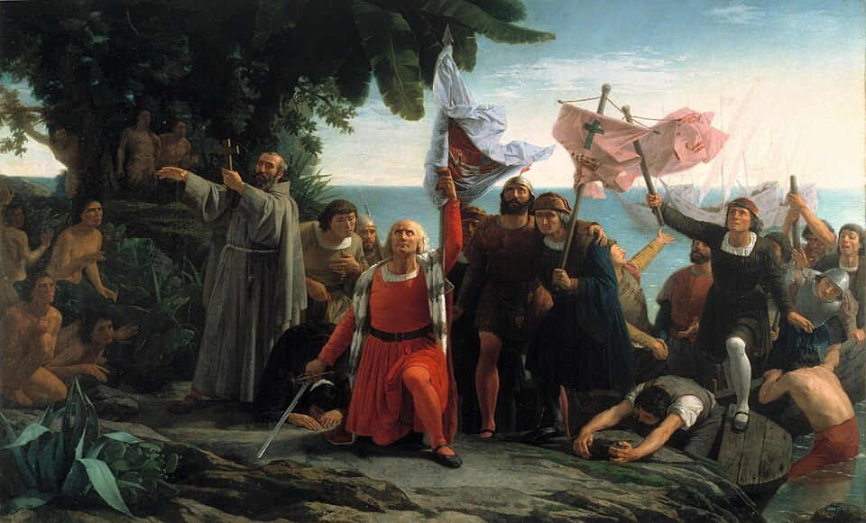

¡Tierra a la vista! Colón alcanza costas desconocidas tras 71 días de mar
El navegante genovés al servicio de la Corona de Castilla desembarcó al alba en una isla que sus habitantes llaman Guanahani, y que él ha bautizado San Salvador. Nadie sabe aún qué mundo es éste.

A las dos de la madrugada de este viernes, el marinero Rodrigo de Triana, apostado en el castillo de proa de la carabela Pinta, lanzó el grito que tres tripulaciones enteras esperaban desde hacía más de dos meses: «¡Tierra! ¡Tierra!». Al amanecer, el almirante Cristóbal Colón pisó la playa con el estandarte real en la mano, se hincó de rodillas y tomó posesión de estas tierras en nombre de los reyes Isabel y Fernando.
La travesía estuvo a punto de no contarse jamás. Las tripulaciones de la Santa María, la Pinta y la Niña, agotadas y convencidas de navegar hacia un abismo sin regreso, habían exigido días atrás dar la vuelta. El almirante, obstinado en su cálculo de alcanzar las Indias por el poniente, obtuvo un plazo de tres días. La tierra apareció al segundo.
La empresa que hoy se corona anduvo mendigando puertas durante años. El genovés la ofreció primero al rey de Portugal, cuyos cosmógrafos la desecharon por cuentas erradas —decían, y quizá no sin razón, que el mar Océano es más ancho de lo que el proponente jura—, y sólo tras años de antesalas en Castilla logró que la reina Isabel firmara las capitulaciones de Santa Fe: almirante de la Mar Océana, virrey de lo que hallare y el diezmo de las riquezas. Títulos enormes para tres naves modestas y unos noventa hombres reclutados en Palos, en buena parte gracias al prestigio de los hermanos Pinzón, marinos del lugar, que la gente de mar no sigue pergaminos sino apellidos.
De la vida a bordo en estas diez semanas se cuentan cosas que pintan al personaje: el almirante llevaba dos cuadernos de bitácora, uno verdadero para sí y otro aliviado de leguas para la tripulación, no fuera que el número la espantara. Y anoche, horas antes del grito de Triana, asegura haber visto él mismo una lumbre «como candelilla que subía y bajaba», con lo cual la recompensa prometida por la Corona al primero que avistara tierra —diez mil maravedíes de renta anual— quedaría para el que manda. El marinero de la Pinta, murmuran ya algunos en los botes, verá la gloria y no el premio.
Los habitantes de la isla, gente mansa que anda sin vestido y sin hierro, salieron a recibir a los recién llegados con frutas y ovillos de algodón. Colón asegura haber llegado a las puertas de Asia y ya prepara la exploración de islas mayores, donde espera hallar el oro del Gran Khan. Quede para los años venideros juzgar la verdadera dimensión de esta jornada: hay a bordo quien murmura que estas tierras no figuran en carta alguna, y que lo hallado no es un atajo, sino un mundo entero que nadie esperaba.